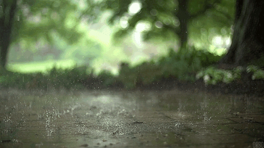

hydro-newton
Capture the drops
Ireland has set the ambitious goal of reaching 70% of all energy produced to be renewable by 2030
. However, in 2010, 15% of the energy was renewable , in four years this only increased by 6%.
This means that if we keep going at the same rate of improvement then we’ll only be at 45%, that’s 25% off our goal!
This means we need to drastically increase the amount of renewable energy. One way of doing this is to increase
Hydroelectricity production. The main issue with this is that there are many disadvantages of Hydroelectric dams,
such as how
it's expensive and the Environmental Consequences e.g. the flooding of land in the building of the reservoir.
These only apply to Hydroelectric dams which is currently the only method of harvesting hydroelectricity.
However, I propose a new way, a better way. A way that has zero environmental consequences and is low cost.
This is to utilize all the rainwater flowing out of all our gutters. If these devices are implemented in
households across the country we can help drastically improve the rate at which we reach our goal of 70% by 2030.
As Hydroelectric power is the most efficient way to turn available energy to electricity, which an efficiency rate of 90%,
however the majority of the renewable energy produced in Ireland is wind and that has an energy conversion rate of 50% at best.
